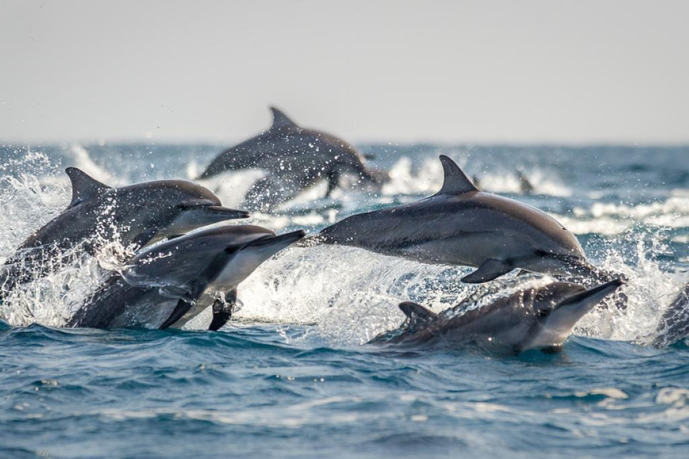
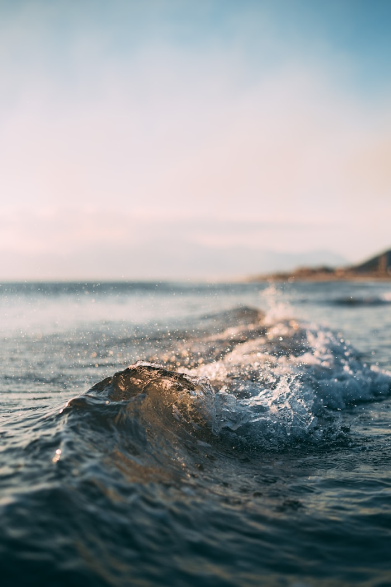
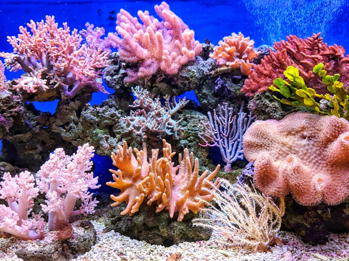

Climate Guardian
Oceans absorb large amounts of heat and carbon dioxide, helping reduce the effects of climate change while keeping global temperatures more balanced.
Discover the beauty, mystery and importance of Earth's oceans.
The ocean is much more than a vast body of water. It is the heartbeat of our planet, supporting life, regulating climate, producing oxygen and inspiring millions of people across the world. Every wave reminds us that nature is powerful, beautiful and worth protecting.
Learn More
Oceans cover nearly seventy-one percent of Earth's surface, making them the largest natural ecosystem on our planet. They help regulate global temperatures, generate a significant portion of the oxygen we breathe and provide food and livelihoods for millions of people. Healthy oceans are also essential for maintaining biodiversity and supporting life both above and below the water.
Oceans absorb large amounts of heat and carbon dioxide, helping reduce the effects of climate change while keeping global temperatures more balanced.
From tiny plankton to giant blue whales, oceans are filled with fascinating creatures that form one of the richest ecosystems on Earth.
Millions of families depend on oceans for food, employment, transportation and scientific discoveries that improve everyday life.
Every corner of the ocean is filled with unique creatures that have adapted to survive in different environments. From shallow coral reefs to the deepest trenches, marine life continues to amaze scientists and nature lovers alike.

Sea turtles have existed for over 100 million years. They travel thousands of kilometres across oceans and always return to the beaches where they were born to lay their eggs.

Coral reefs are often called the rainforests of the sea. They support thousands of marine species and also protect coastlines from strong waves and storms.

Dolphins are intelligent and social mammals. They communicate through whistles and clicks and are known for their playful behaviour and teamwork.
Nearly seventy-one percent of Earth's surface is covered by oceans.
Scientists believe more than eighty percent of the ocean is still unexplored.
The Challenger Deep is the deepest known point in the ocean.
The blue whale is the largest animal to have ever lived on Earth.


Despite centuries of exploration, much of the ocean remains a mystery. Scientists use satellites, underwater robots and research submarines to study marine life, underwater volcanoes and hidden ecosystems. Every new discovery helps us understand our planet better and highlights why protecting our oceans is more important than ever.
Using reusable bottles, bags and containers can significantly reduce plastic pollution in our oceans.
Participating in local beach clean-up drives helps protect marine animals from harmful waste.
Supporting environmental organisations and spreading awareness encourages more people to protect marine ecosystems.
"The ocean reminds us that every small action creates a ripple. Together, those ripples can protect the future of our Blue Planet."